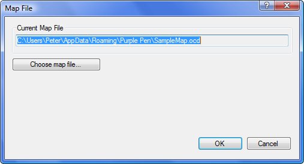
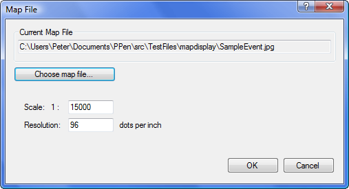

Event/Map File
Displays a dialog that allows changing the map file for the event.

Click the "Choose map file..." button to chose a new map file for the map. Chose an OCAD file, OpenOrienteering Mapper file, PDF file, or click on the "Files of type" list to select "Image Files", and select a JPEG, TIFF, BMP, PNG, or GIF file to use as the map.
If you chose a image file as the map, you must chose a scale and resolution for the map. Purple Pen attempts to read the bitmap resolution from the bitmap file, so this may already be set correctly, but you should check the value to be sure. The resolution is expressed in dots per inch -- the number of pixels in each inch of the printed map. The map scale indicates how the map relates in size to the real world.
